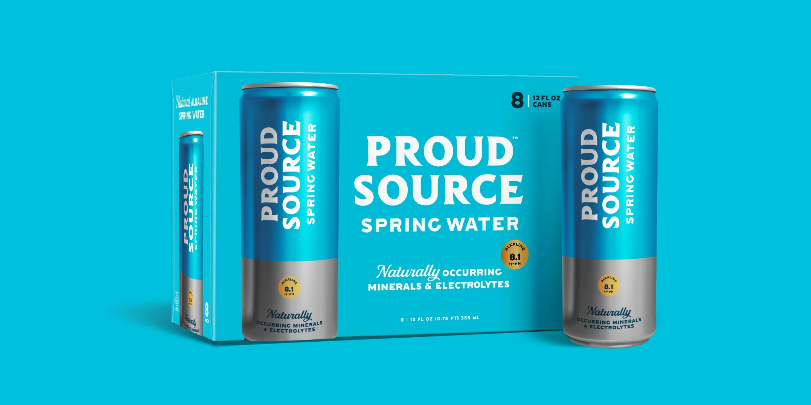
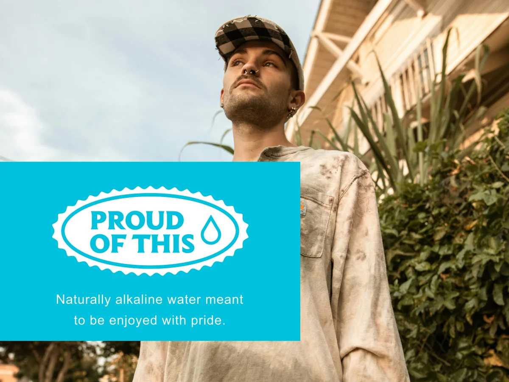
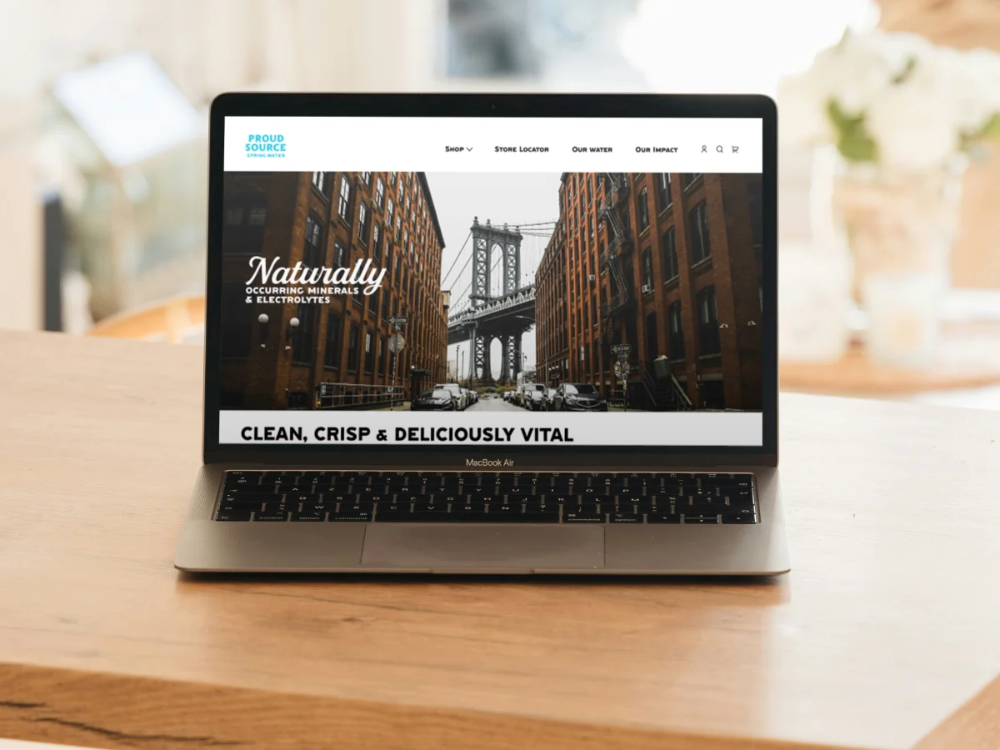
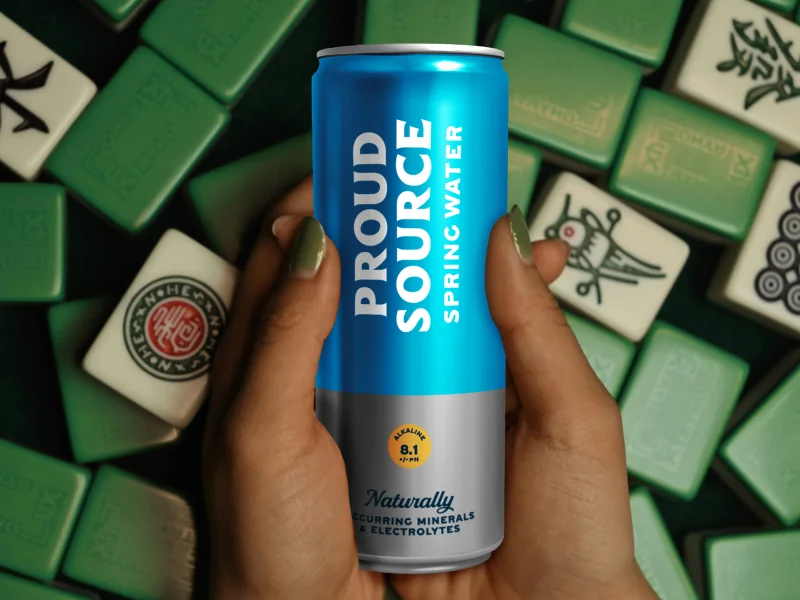
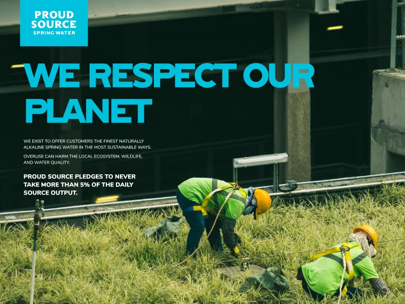
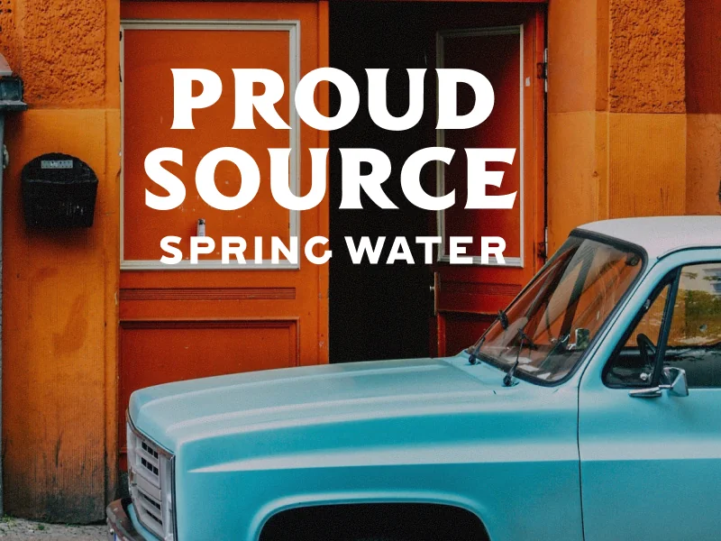
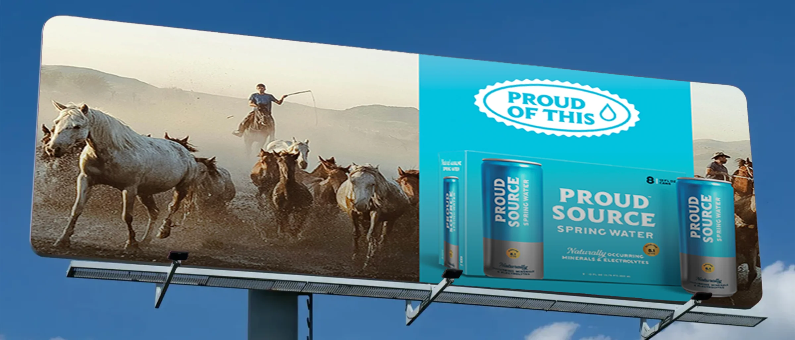
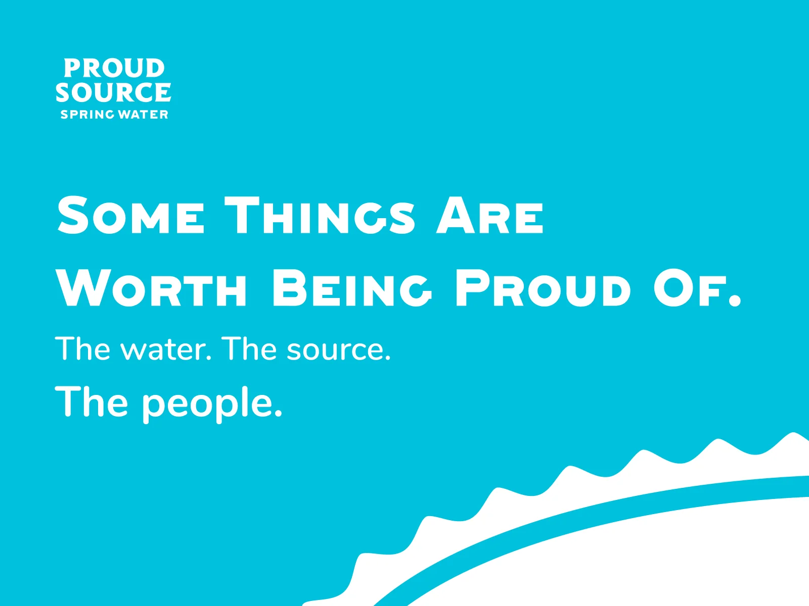
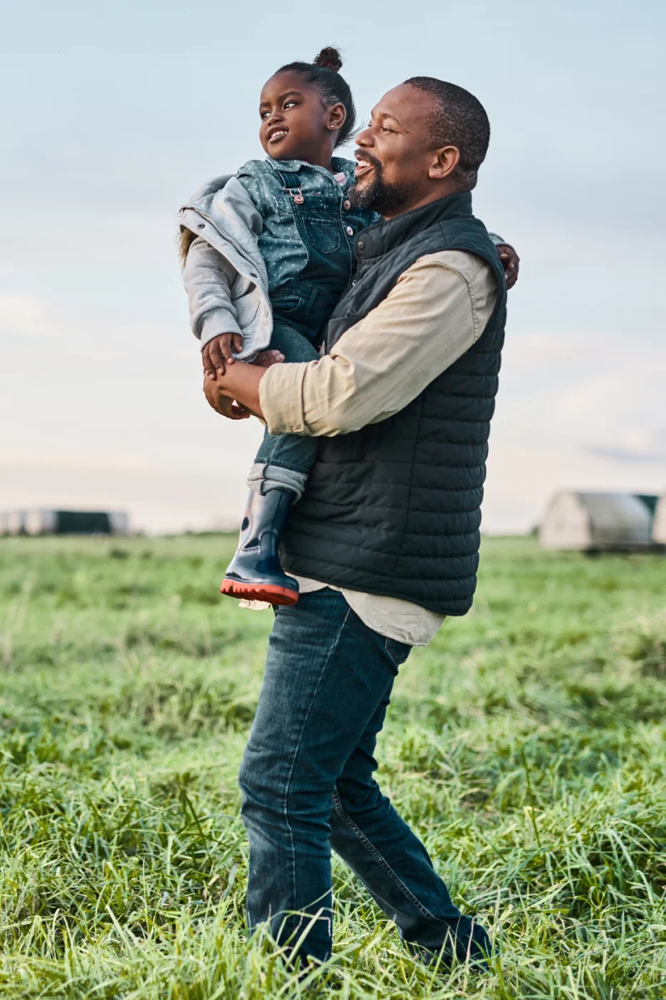

Proud Source Water
Repositioning a spring water brand around the people who drink it, from slogan to cans to billboards.
- Client
- Proud Source Water, naturally alkaline spring water in infinitely recyclable aluminum bottles and cans
- Role
- Brand Designer
- Years
- 2026
- Scope
- Brand strategy and positioning, slogan, logo and logotype refinement, can packaging, photography art direction, campaign direction

The problem
Proud Source wanted to reposition itself in the market, establish a new target audience, and build a marketing strategy and brand identity that would appeal to that audience.
Proud Source started as a small startup from Mackay, Idaho, with a mission to create jobs in a small, mountain town. They quickly gained traction in the U.S. with their focus on sustainability and supplying people with the best, naturally alkaline water. Suddenly, this small-town brand became a main staple on shelves across the country. The only problem was that the scope of their messaging was too narrow to speak to the new customers they were now in front of.
That's where I came in. I was sought out to redirect this message and build a brand that would attract a wider audience.
The brand slogan was "Water Done Different". And their imagery showcased rural, mountainous, outdoor settings. This clearly put the focus on their sustainability aspect, but someone in the heart of Detroit probably doesn't see themselves reflected in that imagery.
Also, this strategy of describing your product and telling people how good it is puts the brand in a position of having to ask customers to buy into who they are. Which, is a weaker place to try to sell from.
That message needed to expand.


The thinking
The answer was already in the name.
I started by going back to the name of the brand and thinking about what "Proud Source" means. The name Proud Source is a statement of trust and love for the product and the desire to share it. I came up with the slogan "Proud of This". Obviously that slogan is saying "we are proud of our product", but it also allows the brand to zoom into different aspects of American culture and life and tell a wider story of the people that make up Proud Source's customer base. They don't have to abandon the original audience or storytelling about the product, but they can expand their voice to speak to new potential customers.
It's also not asking the customer to buy into what the brand is. Instead, it's reflecting the customer to let them know that they already share the customer's values. The customer no longer has to decide "Is this something that fits into my life?" because the messaging already makes that connection for them.



The system
Less decoration, more people, and a can bold enough to stand out in any photo.
With that direction in mind, I started expanding on the original brand identity.
Their original water droplet logo wasn't very original. Multiple other brands are operating in the same space in the bottled water market that also have water droplet logos. Their logotype without the water droplet was already interesting and cool, but was just being underutilized. So I got rid of the water droplet and let the typography stand out.
In order to lean into that American culture messaging, I decided to reduce the emphasis on busy graphic elements and integrate more lifestyle photography, with the goal of showcasing a diverse range of American cultures, where their customers could see themselves represented. In this way, the brand could tell a visual story of its audience today, letting people tell the story of the brand rather than the colorful drawings they were using.
I wanted the can design to be noticeable in their photography. Something simple and bold so that it could fit in any setting, but also catch your eye in the image. The bright color blocking with bold text is visually striking and makes sense, placed in a hiker's backpack on top of a mountain, or being grabbed out of a cooler door from a bodega in the middle of New York.

In the world
I created a clean-looking design that allows their product to fit in any setting and a brand message that puts them there.
The visual identity followed the same logic. Letting the typography carry the brand and building the can design around bold, simple color blocking gave Proud Source a look that travels: as much at home in a hiker's backpack as it is on a shelf in a city bodega.


Results
I created a brand that speaks directly to their target audience and remains focused on their mission of delivering the best quality water.
The Idaho roots, the sustainability mission, and the premium product all stayed exactly as they were. What changed was who felt invited into the story. By shifting the message from describing the product to reflecting the customer's own pride back at them, Proud Source could speak to someone in Detroit just as naturally as someone in the Rockies, without giving up the small-town values the brand started with.